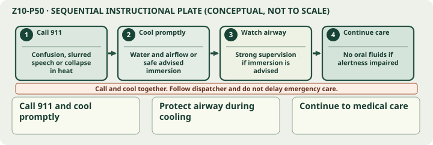

Z10-P50 · Wilderness medicine · New manuscript
Activate 911 and begin rapid cooling immediately for suspected heat stroke
Save brain and organ function during life-threatening heat stroke by cooling immediately alongside urgent 911 dispatch.
When it applies · Any heat-exposed or heavily exerting person showing confusion, slurred speech, agitation, stumbling, seizures, hot skin, or collapse.
Equipment · Cold water immersion tub/stream edge (with airway protected), ice/cold-water soaked towels continuously swapped, shade, and 911 comms.

Actions
- Call 911 IMMEDIATELY for suspected heat stroke (altered mental status, slurred speech, collapse, or very high body heat)—remember exertional heat stroke can occur even with heavy sweating and in moderate temperatures during hard effort.[T05, T09]
- Begin aggressive external cooling IMMEDIATELY while waiting for EMS: immerse the trunk/limbs in cold water if safely available (keeping head and airway strictly supported above water), OR douse continuously with cold water and cold wet towels rotated over neck, armpits, groin, and torso while fanning vigorously.[T05, T09]
- Do NOT force fluids by mouth into a confused, drowsy, or vomiting patient; follow 911 dispatcher directions continuously and obtain mandatory hospital clinical evaluation even if alertness briefly improves.[T09, M05]
Failure recognition · Delaying cooling until an ambulance arrives or stopping evaluation because the patient briefly wakes up after a few minutes in the shade.[T05, T09]
Verify · Confirm 911 is activated, continuous active cooling is underway, airway is protected, and zero oral fluids are forced into an altered patient.[T05, T09, M20]
Stop or change course · Heat stroke is ALWAYS a 911 hospital emergency—never resume travel or skip definitive clinical organ evaluation.[T05, T09]
Evidence and editorial notes
- M05 · NIH / MedlinePlus · Shock (current web edition)
- Section: Recognizing Circulatory Shock and Positioning · Conditions: Injured or ill patient with pale cool clammy skin, rapid weak pulse, confusion, or dizziness
Support: Treat suspected shock as a life-threatening emergency: call 911, control external bleeding, keep the person warm and insulated from cold ground, and do not give food or drink.
Limitations: Field responders cannot diagnose internal hemorrhage or administer IV fluids. · Conflicting evidence: None; reinforces keeping suspected shock patients NPO and warm.
Editorial note: Core shock recognition and stabilization boundary in Z10. · Specialist reviewer: Emergency and wilderness medicine
Primary source · checked 2026-11-24 - M20 · NIH / MedlinePlus · First Aid Overview (current web edition)
- Section: Lay First-Aid Scope, Kit Readiness, and Documentation · Conditions: Pre-trip kit preparation and remote patient monitoring
Support: Maintain an inspected, unexpired first-aid kit matched to your actual training, keep written patient observations (time, responsiveness, breathing, symptoms, interventions) for EMS handoff, and practice skills in certified courses.
Limitations: Carrying advanced medical instruments without clinical training adds risk rather than capability. · Conflicting evidence: None; aligns with ARC and NPS-K.
Editorial note: Anchors kit sizing, SOAP-style lay observation logs, and scope-of-practice cards. · Specialist reviewer: Wilderness EMS and clinical education
Primary source · checked 2026-11-24 - T05 · CDC NIOSH · Heat-related Illnesses (current web edition)
- Section: Heat stroke > First aid · Conditions: Heat exposure and altered mental status
Support: Heat illness may be life-threatening. Seek emergency care for suspected heat stroke and start cooling promptly.
Limitations: Delays in active cooling worsen neurologic outcomes. · Conflicting evidence: None; aligns with CDC-HEAT.
Editorial note: Core heat-emergency escalation rule. · Specialist reviewer: Emergency and wilderness medicine
Primary source · checked 2026-11-24 - T09 · CDC NIOSH · Heat-related Illnesses (current web edition)
- Section: Heat stroke > Symptoms and First aid · Conditions: Suspected heat stroke after exertion or heat exposure
Support: Confusion, slurred speech or loss of consciousness can indicate heat stroke. Call 911 and cool the person promptly.
Limitations: Exertional heat stroke can occur even in moderate ambient temperatures during heavy effort. · Conflicting evidence: None; aligns with T05.
Editorial note: Triggers immediate emergency call and cooling stop condition. · Specialist reviewer: Emergency and wilderness medicine
Primary source · checked 2026-11-24
Source lineage · CDC NIOSH Heat Illnesses; new manuscript · Classification · New manuscript.